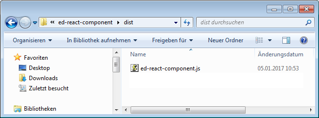
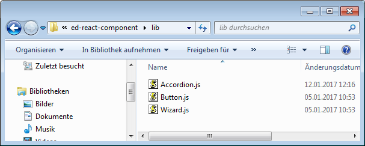

React Component Libraries @ ERGO Direkt
High level requirements
Easy and familiar installation
Minimal footprint
Minimal usage prerequisites
Explicite prerequisites
Universal usage
Easy and familiar installation
code copy & paste
manual copying files from git repo
$ npm install ed-react-components
// Tarif.js
import { Button, Wizard } from 'ed-react-components'
Minimal usage prerequisites
ES6 / ES7
Typescript / Flow
JSX
down-compiled to ES5
Starter-kit
Based on a 3rd party or handmade
Publish (1)
$ npm login
$ npm publish
// package.json
{
"version":"1.0.7",
"scripts":{
"prepublish":"npm run webpack:lib && npm run webpack:dist && npm version patch",
"webpack:lib":"webpack --config ./webpack.lib.config.js",
"webpack:dist":"webpack --config ./webpack.dist.config.js"
}
}Publish (2)
Publish (3)
Omit unnecessary files
// .npmignore
index.html
webpack.*
.npmignore
src/index.js
// package.json
{
"files": [
"/dist/ed-react-components.js",
"/lib/Buttons.js",
"/lib/Wizard.js",
"/lib/Accordion.js",
"README.md"
]}Dependent libraries (1)
React and ReactDOM as dependencies instead of including them
// webpack.config.js
module.exports = {
externals: [ 'react', 'react-dom' ]
}
Dependent libraries (2)
Make dependencies explicite
// package.json
{
"peerDependencies": {
"react":">= 15.4.1",
"react-dom":">= 15.4.1"
}
}
npm WARN ed-react-components@1.14.0 requires a peer of
react@>=15.4.1 but none was installed.Bundled version (1)
full-blown / big footprint
import { Button, Accordion } from 'ed-react-components'Modular version (1)
fine-grained / small footprint
import Accordion from 'ed-react-components/lib/Accordion'Bundled vs. modular version
// App.js
import { Button } from 'react-bootstrap'
// import Button from 'react-bootstrap/lib/Button'

// App.js
// import { Button } from 'react-bootstrap'
import Button from 'react-bootstrap/lib/Button'

Bundled version (2)
entry point simply re-exports all components
// main.js
export { default as Button } from './Button'
export { default as Wizard } from './Wizard'
export { default as Accordion } from './Accordion'
// webpack.config.js
module.exports = {
entry: path.join(__dirname, "/src/main.js"),
output: {
path: path.join(__dirname + "/dist/"),
filename: "ed-react-components.js",
library: "ed-react-components",
}
}
// package.json
{
"main": "dist/ed-react-components.js"
}Modular version (2)
multiple entry points
// webpack.config.js
module.exports = {
entry: {
'Button': path.join(__dirname, "/src/Button.js"),
'Wizard': path.join(__dirname, "/src/Wizard.js"),
'Accordion': path.join(__dirname, "/src/Accordion.js")
},
output: {
path: path.join(__dirname + "/lib/"),
filename: "[name].js",
library: ["ed-react-components", "[name]"],
}
}Universal module definition
usable as CommonJS, AMD and with script-tag
// webpack.config.js
module.exports = {
output: { // ...
libraryTarget: "umd"
},
externals: {
'react': { root: 'React', commonjs2: 'react', commonjs: 'react', amd: 'react' },
'react-dom': { root: 'ReactDOM', commonjs2: 'react-dom', commonjs: 'react-dom', amd: 'react-dom' },
}}}